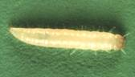
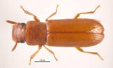

| Home |
| SUGARCANE |
PRIMARY STORAGE PEST |
INTERNAL FEEDERS |
| 1. Rice weevil |
| 2. Lesser grain borer |
| 3. Angoumois grain moth |
| 4. Pulse beetle |
| 5. Cigarette beetle |
| 6. Drug store beetle |
| 7. Tamarind Beetle |
| 8. Sweet Potato weevil |
| 9. Potato tuber moth |
| 10. Arecanut beetle |
EXTERNAL FEEDERS |
| 11. Red flour beetle |
| 12. Indian meal moth |
| 13. Fig moth or almond moth |
| 14. Rice moth |
| 15. Khapra beetle |
SECONDARY STORAGE PEST |
| 16. Saw toothed grain beetle |
| 17. Long headed flour beetle |
| 18. Flat grain beetle |
| 19. Grain lice |
| 20. Grain mite |
| Questions |
| Download Notes |
STORED GRAIN :: SECONDARY STORAGE PEST :: LONG HEADED FLOUR BEETLE
2. Long headed flour beetle: Latheticus oryzae (Tenebrionidae: Coloeptera)

Bionomics : The beetle is light brown in colour with longated body, measuring 2 -3 mm in length and resembles Tribolium castaneum. It lays 400 white eggs singly on grain and seams of the bags. The incubation period is 7 – 12 days. The grub is small, white active which feeds voraciously. The larval period is 15-80 days. It pupates for 5-10 days. Life cycle is completed in 25 days at 35 0 and 70% relative humidity.
Resembles Tribolium. Head is longer in proportion to the body than that of Tribolium, paler and brighter than Tribolium.
Damage symptoms : Both grubs and adult beetles feed on the milled products. It occurs as secondary infestation in stored grain. It attacks cereal flour, packaged food, rice and rice products. Occurs as secondary infestation in stored sorghum, wheat, etc.